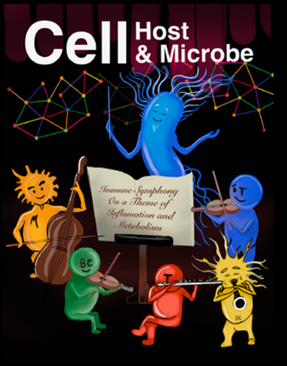

论文
FengLab 发表的同行评议研究成果。
FengLab 研究成果
论文
我们的研究涵盖人类系统免疫学、疫苗应答、抗体发现，以及微生物组与免疫功能之间的相互作用。
精选论文
2025
Cell Host & Microbe · 33(5), 705–718.e5
抗生素诱导的肠道微生物组扰动改变狂犬病疫苗的免疫应答
本研究探讨抗生素引起的肠道微生物组扰动如何影响狂犬病疫苗接种后的免疫应答。
查看论文期刊重点呈现
封面论文
三项研究获选期刊封面论文，展现了我们在疫苗设计、记忆 B 细胞生物学以及微生物组–免疫调控方面的工作。
论文记录
研究论文
按时间倒序排列。论文标题链接至期刊或出版商的原始页面。
2025
Cell Host & Microbe · 33(5), 705–718.e5
抗生素诱导的肠道微生物组扰动改变狂犬病疫苗的免疫应答
Cell Reports Medicine · 6(4)
肺移植受者基线免疫状态改变且对 SARS-CoV-2 mRNA 疫苗的免疫应答受损
2024
Science Immunology · 9(94), eadi8039
AS03 佐剂增强植物源 COVID-19 疫苗在人群中诱导的记忆 B 细胞应答幅度、持久性与克隆广度
Science Translational Medicine · 16(758), eadn6605
在非人灵长类动物中对 R21 疟疾疫苗多种临床阶段佐剂进行比较免疫学评估
2023
Journal of Clinical Investigation · 133(10)
COVID-19 mRNA 加强免疫应答的持久性
Nature Immunology · 24(2), 337–348
SREBP 信号对有效的 B 细胞应答至关重要
Cell · 186(21), 4632–4651.e23
出生后针对 SARS-CoV-2 的黏膜与全身免疫多组学分析
Science Translational Medicine · 15(695), eadg7404
以 AS03 佐剂 COVID-19 疫苗免疫猕猴产生针对沙贝病毒的广谱中和抗体
2022
Nature Immunology · 23(4), 543–555
辉瑞–BioNTech BNT162b2 疫苗诱导先天性与适应性免疫的机制
Science Translational Medicine · 14(658), eabq4130
佐剂型亚单位疫苗可诱导针对 SARS-CoV-2 奥密克戎变异株的持久保护
npj Vaccines · 7, 55
使用具有临床相关性的佐剂增强 SARS-CoV-2 亚单位疫苗，可在小鼠中诱导持久保护
2021
Nature · 596(7872), 410–416
BNT162b2 mRNA 疫苗在人体中的系统疫苗学研究
2020
Science · 369(6508), 1210–1220
人类轻症与重症 COVID-19 感染免疫反应的系统生物学评估
2019
Frontiers in Immunology · 10, 2426
中国恒河猴浆母细胞的表型鉴定及抗原特异性单克隆抗体克隆
2018
npj Vaccines · 3, 29
引入 NS1 与 prM/M 对携带 E 蛋白的腺病毒载体寨卡病毒疫苗实现有效保护至关重要
Journal of Biomedical Nanotechnology · 14(10), 1806–1815
口服补骨脂宁负载 PEG-PLGA 纳米颗粒治疗小鼠哮喘模型
Virology · 518, 272–283
14 型与 55 型腺病毒的六邻体和纤维蛋白是中和抗体的主要靶点，但仅纤维蛋白特异性抗体具有交叉中和活性
Emerging Microbes & Infections · 7(1), 1–12
2 型腺病毒载体埃博拉病毒疫苗在小鼠和恒河猴中诱导强效抗体及细胞免疫应答
2016
Scientific Reports · 6, 25856
针对埃博拉病毒感染的高效中和单克隆抗体
2015
International Journal of Nanomedicine · 1743–1757
将蛋白质特异性靶向递送至吞噬性巨噬细胞
2014
International Journal of Pharmaceutics · 465(1–2), 378–387
一种具有高包封能力、用于靶向递送化疗药物 10-羟基喜树碱的新型多功能聚酰胺-胺树枝状递送系统
Organic & Biomolecular Chemistry · 12(29), 5365–5374
一种可在细胞内激活的肿瘤成像荧光探针
更正
2023 · Nature 618, E18 作者更正：BNT162b2 mRNA 疫苗在人体中的系统疫苗学研究